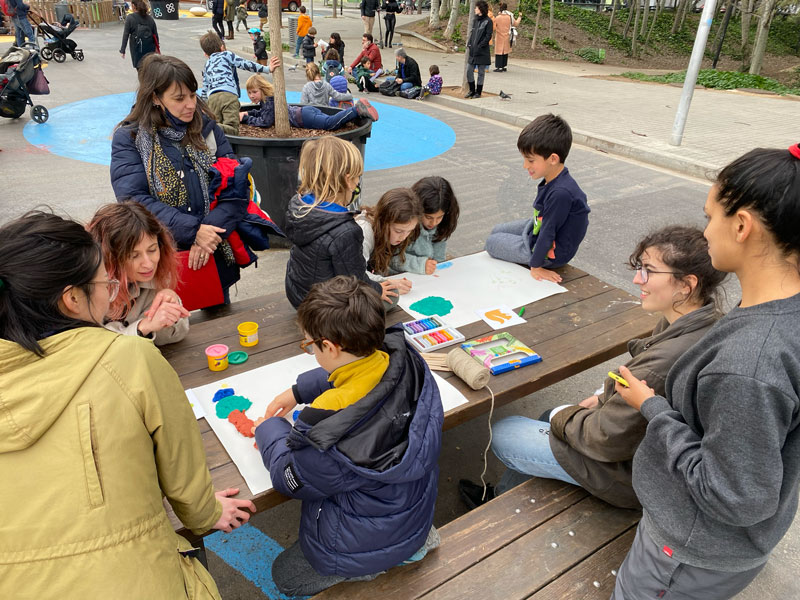
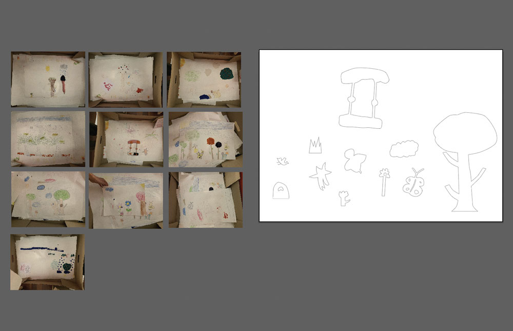
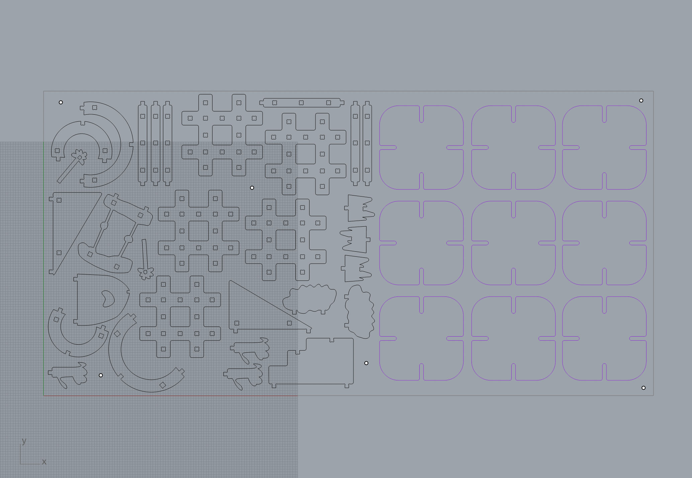
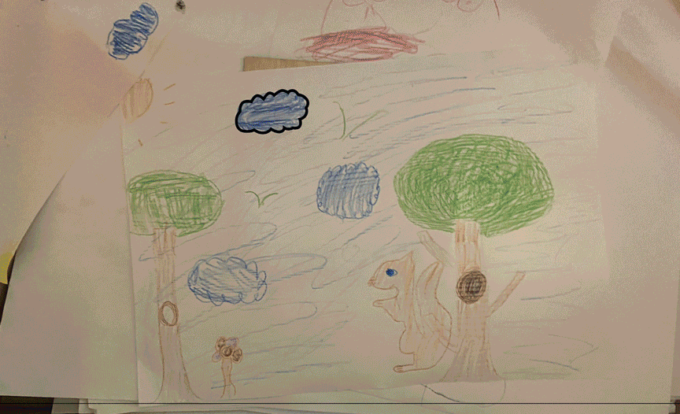
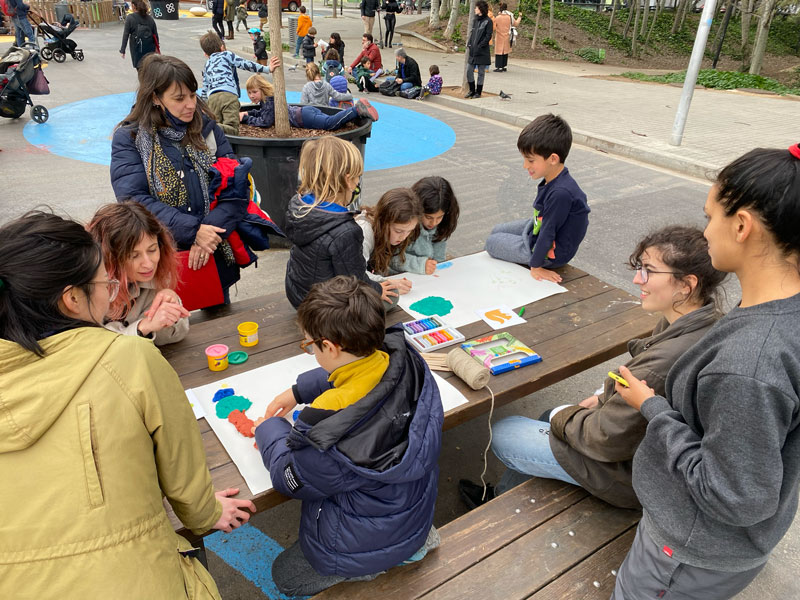
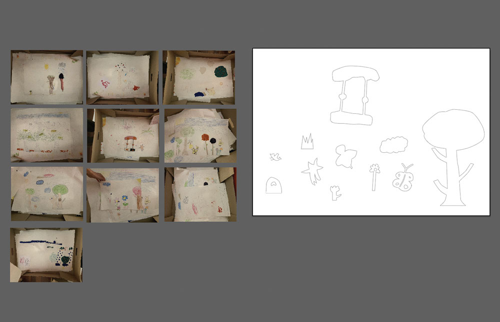
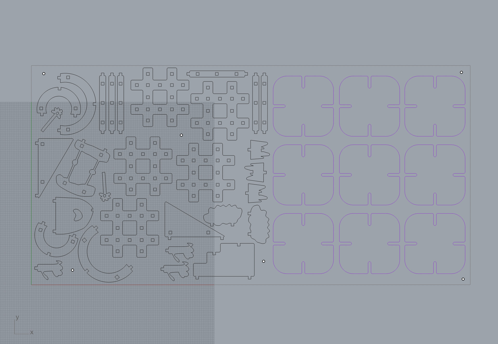
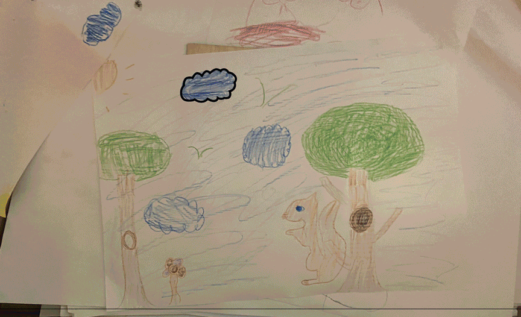

🗓 10 March 2022
We went on to test the machine. During our test we broke an end mill due to the slow speed, and the friction of the chips. The second time, I tried tightening the end mill part and it turned out it was slightly too loose. After it cut a first round, we noticed the sound and the end mill was not cutting into the pine wood but scraping the top. Edo stopped the CNC and when he touched the end mill, it fell out. We didn't get to do much cutting, but it was a good lesson on what not to do.
Assignment:
Borka and I used this week's CNC assignment to cut community components for our intervention. Our intervention is around the theme of human and non-human diversity in urban spaces. A week prior, we held a workshop with school-children and parents, where we asked them to imagine themselves as a diverse human and non-human agent (ie. bird, tree, blind person, elderly, bee, or squirrel), and design an urban space based on the agent's needs. Our main goal was to explore designing with transgernerational communities to generate empathy for and build diverse urban environments that can be friendly to more-than-average human beings.

We held this workshop in the Superilla in the Poblenou neighborhood, which was another significant urban design plan by the city of Barcelona. With the prompt, the children and parents made 15 drawings with crayons, sticks, and clay. We documented these drawings and extracted several shapes from them to create CNC cut building structures, which we could use for part 2 of our workshop (building). For this assignment, we created joints in these shapes and tested cutting them at a smaller scale to explore how they worked before cutting them full-scale.

This was my second time using the CNC, as I had used it before for the Micro-Challenge 2. We received help from the fab team to set up our file in Rhinocam and extract the g-code for the machine.
Here are the steps we followed:


CNC
This week as a lesson on the CNC (computer numerical control), a subtractive manufacturing technology that is commonly used for cutting large and heavy-duty material. The multiple axis Materials that can be used Different parts of the machineWe went on to test the machine. During our test we broke an end mill due to the slow speed, and the friction of the chips. The second time, I tried tightening the end mill part and it turned out it was slightly too loose. After it cut a first round, we noticed the sound and the end mill was not cutting into the pine wood but scraping the top. Edo stopped the CNC and when he touched the end mill, it fell out. We didn't get to do much cutting, but it was a good lesson on what not to do.
Assignment:
Borka and I used this week's CNC assignment to cut community components for our intervention. Our intervention is around the theme of human and non-human diversity in urban spaces. A week prior, we held a workshop with school-children and parents, where we asked them to imagine themselves as a diverse human and non-human agent (ie. bird, tree, blind person, elderly, bee, or squirrel), and design an urban space based on the agent's needs. Our main goal was to explore designing with transgernerational communities to generate empathy for and build diverse urban environments that can be friendly to more-than-average human beings.

We held this workshop in the Superilla in the Poblenou neighborhood, which was another significant urban design plan by the city of Barcelona. With the prompt, the children and parents made 15 drawings with crayons, sticks, and clay. We documented these drawings and extracted several shapes from them to create CNC cut building structures, which we could use for part 2 of our workshop (building). For this assignment, we created joints in these shapes and tested cutting them at a smaller scale to explore how they worked before cutting them full-scale.

This was my second time using the CNC, as I had used it before for the Micro-Challenge 2. We received help from the fab team to set up our file in Rhinocam and extract the g-code for the machine.
Here are the steps we followed:
- 1. Select or set up end mill
- 2. Select stock
- 3. Select profiling option
- 4. Set feed and speed (use data sheet of the tool)
- 5. Set clearance plane
- 5. Set cut parameters
- 6. Set cut-depth (around 0.2 more than the depth of the material, to make sure the material is fully cut)
- 7. Repeat for each type of cut (screws, pocket, and cut)
- 8. Select and add the geometry for each type of cut
- 9. "Post" (to g-code) each cut folder in order of opperation

